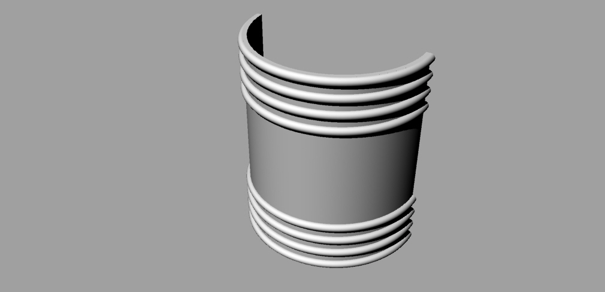

¿Que es la Joyería Maker?
La joyería Maker es la fusión de dos mundos, por un lado, tenemos la joyería contemporánea que plantea que el valor de la joya ya no es por su material, si no por su intencionalidad, por el valor de la idea que la joya. Por otro lado, esta el mundo Maker, que aporta desde la democratización de los procesos, gracias a la masificación de maquinas como es el caso de la impresora 3D. Esta fusión genera, un proceso no tradicional de joyería, en el cual las piezas se crean desde modelos 3D para luego ser impresos.
